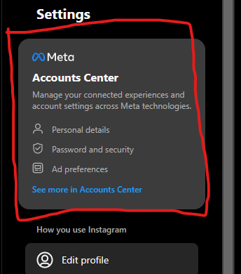
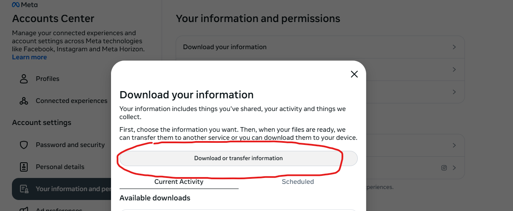
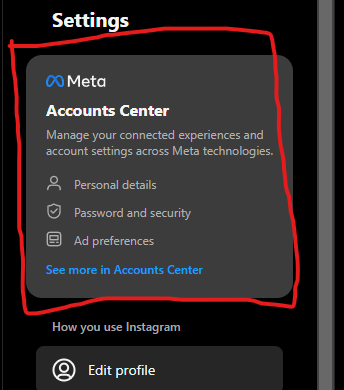
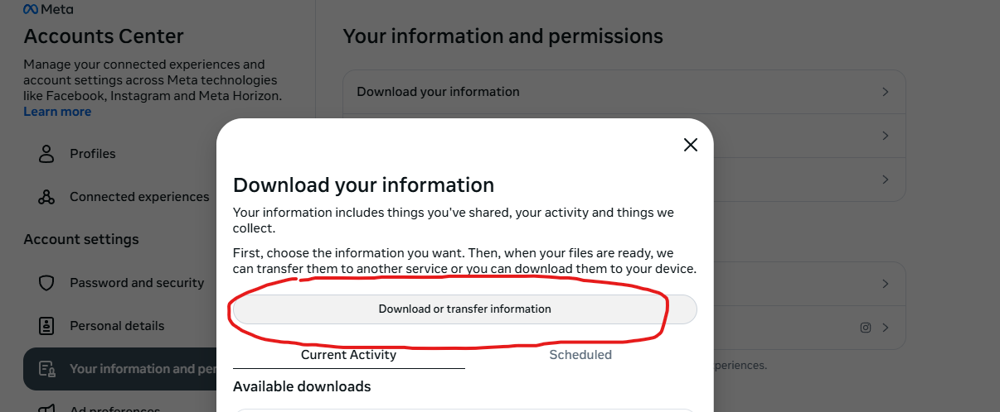

Instagram Follower/Following Checker
Upload the "followers_1.json" and "following.json" in the box below.
Drag and drop the 2 files here or click to upload.
First, go to Instagram and go to the settings. Select the "Meta Account Center".

Then navigate to "Your information and permissions" > "Download your information". This will pop up a window. Click on the "Download or transfer information".

You will be given options for what you want to download. I recommend selecting "Some of your information" and then checking off the "Followers and Following" under the Connections section. Then click "Next".
On the next screen, select "Download to Device". I would recommend setting the Date Range to "All time" and setting the Media quality to low.
Also this is important: Make sure to select the format as JSON.
Once you have updated those settings, click "Save", which will put in your request. It might take some time for Meta to create the files so whenever you get an email saying your download is ready, come back and download the files. Once your files have been downloaded, unzip them and drag and drop the "followers_1.json" and "following.json" files into the box.

Then navigate to "Your information and permissions" > "Download your information". This will pop up a window. Click on the "Download or transfer information".

You will be given options for what you want to download. I recommend selecting "Some of your information" and then checking off the "Followers and Following" under the Connections section. Then click "Next".
On the next screen, select "Download to Device". I would recommend setting the Date Range to "All time" and setting the Media quality to low.
Also this is important: Make sure to select the format as JSON.
Once you have updated those settings, click "Save", which will put in your request. It might take some time for Meta to create the files so whenever you get an email saying your download is ready, come back and download the files. Once your files have been downloaded, unzip them and drag and drop the "followers_1.json" and "following.json" files into the box.